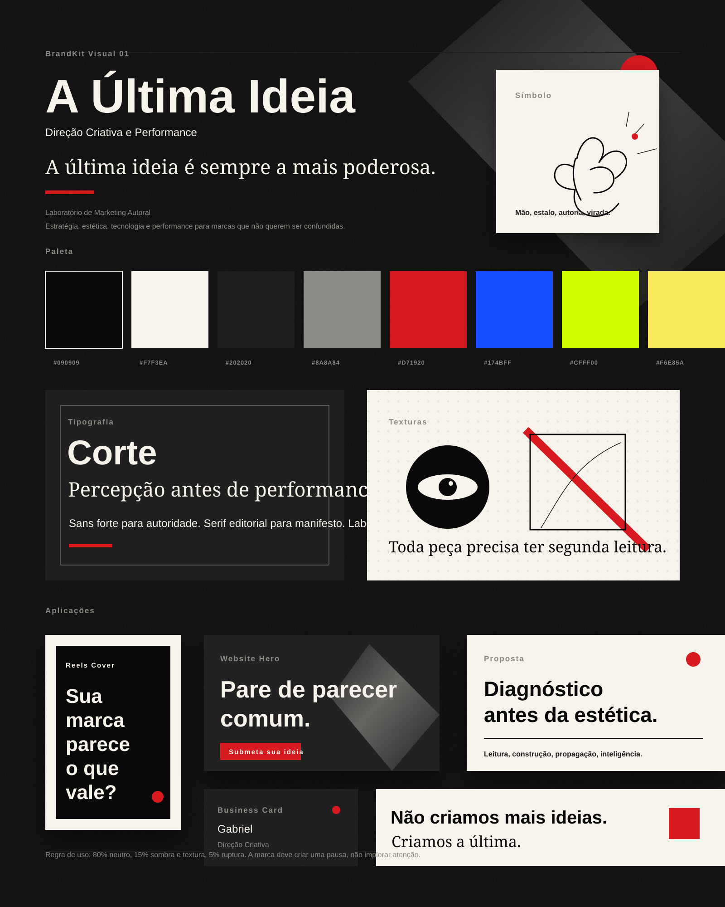

A Última Ideia
Visualização viva do BrandKit atual: direção criativa, performance e laboratório autoral.

A marca deve criar uma pausa, não implorar atenção.
Visualização viva do BrandKit atual: direção criativa, performance e laboratório autoral.

A marca deve criar uma pausa, não implorar atenção.